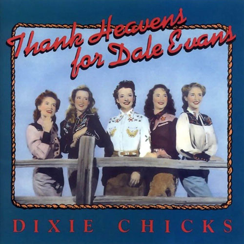
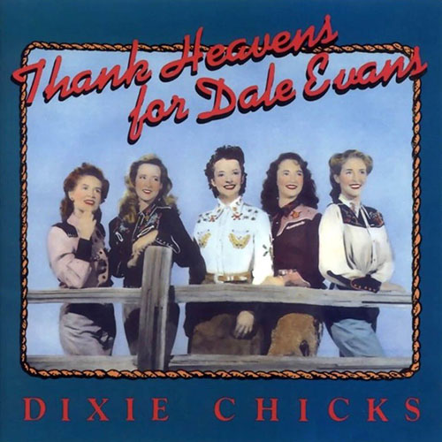

Francisco Javier Ruibal de Flores Calero (El Puerto de Santa María, Cádiz, 15 de mayo de 1955), más conocido como Javier Ruibal, es un cantautor y arreglista español que combina estilos de flamenco,
sefardí-magrebí, jazz y rock; y que ha participado como compositor en películas como Atún y chocolate (2004).
A lo largo de su carrera profesional ha recibido distintos reconocimientos, como la Medalla de Oro de Andalucía(2007), el Premio Nacional de las
Músicas Actuales (2017), el Premio Nacional de Cultura y el Premio Goya a la mejor canción original (2020).
Ha compuesto además para el cine, colaborando en las películas Atún y chocolate (Pablo Carbonell), Lejos del mar (Imanol Uribe) y Arena en los bolsillos (César Martínez Herrada); para el programa de televisión Ratones coloraos,de Canal Sur;
para los espectáculos de baile flamenco Carmen y Medusa la guardiana, de Sara Baras; y para diferentes producciones audiovisuales (El mar de la libertad, A galopar y Algeciras-Tánger) de la Diputación de Cádiz. También lo ha hecho para otros cantantes como Martirio,
Ana Belén, Javier Krahe, Mónica Molina o Pasión Vega.

Ελευθερία Αρβανιτάκη, romanizando su nombre Elefthería Arvanitáki —El Pireo, puerto de Atenas; 17 de octubre de 1958—,
es una cantante griega conocida dentro y fuera de Grecia como parte de la escena de las músicasdel mundo. Algunos de sus éxitos,
como «Δυνατά» —«Dinatá», ‘Fuerte’—, «Mένω εκτός» —«Méno ektós», ‘Me quedo fuera’—, y «Παράπονο / Η ξενιτειά» —«Parápono / I xenitiá»,
'La queja / El exilio’—, se han hecho conocidos en España.
Publicó en 1984 su primer álbum en solitario, con título epónimo, Ελευθερία Αρβανιτάκη. Posteriormente publicó Τανιράμα —Taniráma— en 1989;
Μένω εκτός —Méno ektós, ‘Me quedo fuera’— en 1991; Τα κορμιά και τα μαχαίρια —Ta kormiá kai ta makhairía, ‘Los cuerpos y los cuchillos’— en 1994;
Εκπομπή —Ekpombí, ‘Emisión’— en 2001) y Όλα στο φώς —Ola sto fós, ‘Todo sacado a la luz’— en 2004.
En el álbum Τα κορμιά και τα μαχαίρια colaboró el músico estadounidense de origen armenio Ara Dinkjian.


The Chicks (anteriormente Dixie Chicks) es una banda de música country-pop de Estados Unidos formado por Natalie Maines
y las hermanas Martie Maguire y Emily Robison. Es la segunda banda femenina que más discos ha vendido, independientemente
del género musical (tras el grupo Destiny's Child), con 36 millones de álbumes desde junio de 2006.
El grupo se formó en 1989 en Dallas, Texas. Después de años de esfuerzos y tribulaciones, Dixie Chicks alcanzó a finales de la
década de 1990 un éxito apabullante en los géneros country y pop con hits como “Wide open spaces”, "Cowboy take me away” y
“Long time gone”. Poco a poco han llegado a ser reconocidas por su vitalidad, virtuosismo instrumental, baladas,buen gusto en
moda y la franqueza de sus comentarios políticos. En su carrera suman ya un total de 13 premios Grammy.

 
